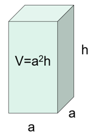
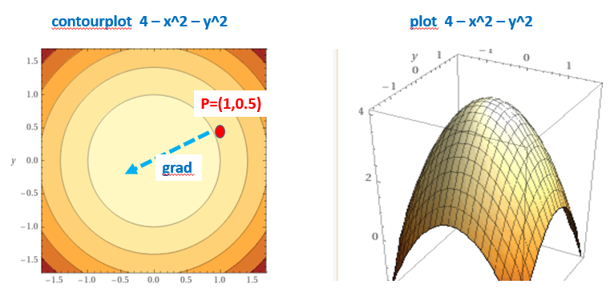
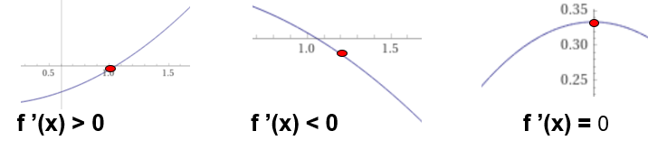
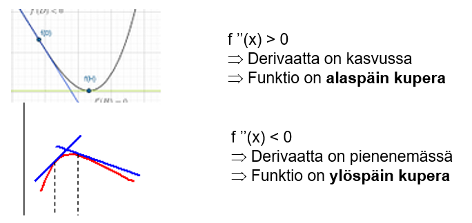

Osittaisderivaatat
Contents
Osittaisderivaatat¶
Edellä käsiteltiin yhden muuttujan funktioiden f(x) derivaattoja, joiden arvot kuvaavat funktion kasvunopeutta tangentin kulmakertoimen avulla.
Usean muuttujan funktiolle voidaan laskea ns. osittaisderivaatat kunkin muuttujan suhteen. Osittaisderivaatat lasketaan aiemmin esitetyillä derivoimiskaavoilla. Laskettaessa osittaisderivaattaa jonkin muuttujan suhteen, käsitellään muita funktion muuttujia vakioina.
Osittaisderivaattoja voidaan myös tulkita geometrisesti. Esim. kahden muuttujan funktion z = f(x,y) kuvaaja on pinta 3D- avaruudessa. Osittaisderivaatat kohdassa \((x_0,y_0)\) antavat pinnan tangentin kulmakertoimet koordinaattiakselien suunnassa kyseisessä pisteessä.
Osittaisderivaattojen merkintätavat
Olkoon f(x,y) kahden muuttujan funktio, jolla on osittaisderivaatat molempien muuttujien suhteen.
Osittaisderivaattaa muuttujien x ja y suhteen merkitään \( \frac{\partial f}{\partial x}\) ja \( \frac{\partial f}{\partial y}\).
(luetaan: “doo ef doo x”)
Myös \(f_x\) ja \(D(f,x)\), sekä \(f_y\) ja \(D(f,y)\) ovat mahdollisia merkintätapoja.
Laske lausekkeen \(y x^2+4x+5y\) osittaisderivaatat.
Ratkaisu:
a) Osittaisderivaatta x:n suhteen D(\(y x^2+4x+5y,x)\)
Derivointi kohdistetaan muuttujan x potensseihin, y:tä käsitellään vakiona
D (\(y\color{red}{x^2}\color{black}+4\color{red}{x}\color{black}+5y,\color{red}{x})\) = \(y\cdot \color{red}{2x}\color{black}+4\cdot \color{red}{1}\color{black}+0\) = \(2xy+4\)
b) Osittaisderivaatta y:n suhteen D(\(y x^2+4x+5y,y)\)
Derivointi kohdistetaan muuttujan y potensseihin, x:ää käsitellään vakiona
D (\(\color{red}{y}\color{black} x^2+4x+5\color{red}{y},\color{red}{y})\) = \( \color{red}{1}\cdot\color{black} x^2+0+5\cdot \color{red}{1}\) = \(\color{black}x^2+5\)
Sähköteho lasketaan kaavalla P = \(\frac {U^2}{R}\). Laske tehon lausekkeen osittaisderivaatat muuttujien U (jännite) ja R (resistanssi) suhteen.
\(\frac{\partial P}{\partial U}\) = \(D(\frac {\color {red} U^2}{R},\color {red}U)\) = \(\frac {2U}{R}\)
\(\frac{\partial P}{\partial R}\) = \(D(\frac { U^2}{\color {red}R},\color {red}R)\) = \(-\frac {U^2}{R^2}\)
(käytetty kaavoja: \(Dx^2=2x\) ja \(D\frac {1}{x}=-\frac {1}{x^2}\))
Neliöpohjaisen laatikon tilavuus \(V(a,h) = a^2 h\). Laske funktion V osittaisderivaatat muuttujien a ja h suhteen

\(\frac{\partial V}{\partial a}\) = \(D(a^2 h,a)\) = \(2ah\)
\(\frac{\partial V}{\partial h}\) = \(D(a^2 h,h)\) = \(a^2\)
Funktion f(x,y) gradientti \(\nabla f\)¶
Gradientin määritelmä
Funktion f(x,y) gradientti on sen osittaisderivaattojen muodostama vektori \((\frac{\partial f}{\partial x},\frac{\partial f}{\partial y})\). Gradienttia merkitään usein \(\nabla f\).
Kahden muuttujan funktion z = f(x,y) kuvaaja 3D avaruudessa on pinta. Pisteessä (x,y) laskettu funktion f gradienttivektori kertoo, mihin suuntaan funktio kasvaa nopeimmin pinnan pisteessä (x,y,z), missä z=f(x,y)).
Esim. Funktion \(z = f(x,y) = 4 - x^2- y^2\) kuvaaja on alaspäin aukeava paraboloidi.
Sen gradienttivektorin yleinen lauseke on \((\frac{\partial f}{\partial x},\frac{\partial f}{\partial y})\) = \((-2x,-2y)\).
Kysyttäessä missä suunnassa pisteestä (1,0.5) on paraboloidin huippu, voidaan vastauksena antaa gradienttivektori \((-2\cdot 1,-2\cdot 0.5) = (-2,-1)\).

Määritä funktion \(f(x,y) = 2 x^2 + 5 x y + y^2\) a) gradienttivektorin yleinen lauseke b) gradientti pisteessä (3,2).
a) Gradientti muodostuu osittaisderivatoista: \(\nabla f = (\frac{\partial f}{\partial x},\frac{\partial f}{\partial y}) =(4x+5y, 5x+2y)\)
b) Pisteessä (3,2) gradientin arvo on \((4\cdot 3+5\cdot 2, 5\cdot 3+2\cdot 2) = (22, 19) \)
Korkeamman asteen derivaatat¶
Funktion y = f(x) derivointia voidaan jatkaa derivaatan \(f'(x)\) laskemisen jälkeen edelleen. Näin saadaan korkeamman asteen derivaattoja:
toinen derivaatta \(f''(x)\) , jota voidaan merkitä myös y’ tai \( \frac{d^2f(x)}{dx^2} \)
kolmas derivaatta \(f'''(x)\)
j.n.e
Laske funktion \(y = 2x^3 + 5x^2 + 7x + 2\) kolme ensimmäistä derivaattaa.
\(y' = 6x^2 + 10 x + 7\)
\(y''= 12 x + 10 \)
\(y''' = 12 \)
Derivaatat antavat tietoa funktion kulusta¶
Funktion y = f(x) derivaatta on funktion kuvaajan tangentin kulmakerroin. Siten
Jos \(f'(x) > 0\) , funktion on kasvava
Jos \(f'(x) < 0\) , funktion on vähenevä
Jos \(f'(x) = 0\) , funktiolla on usein ääriarvo: minimi tai maksimi

Millä x:n arvolla lauseke \(2.5 + 6.0x -1.5x^2\) saa suurimman arvonsa.
Funktion kuvaaja on alaspäin aukeava paraabeli, jonka maksimikohdassa derivaatta = 0
Lasketaan derivaatan nollakohta: D\((2.5 + 6.0 x - 1.5 x^2) = 6.0 - 3.0 x = 0\)
=> \(x = 6.0/3.0 = 2.0\)
Suurin arvo löytyy kohdasta x = 2 ja se on \(2.5 + 6\cdot 2 - 1.5\cdot 2^2\) = 8.5
Toisen derivaatan \(f''(x)\) merkki kertoo käyrän kuperuussuunnan¶

Ääriarvon laadun määrääminen
Kuten aiemmin on todettu, funktion suurin tai pienin arvo löytyvät usein derivaatan nollakohdasta.
Kun derivaatan nollakohta on löydetty, eikä funktion kuvaajaa ole käytettävissä, pitää vielä osoittaa ääriarvon laatu: ts. onko kyseessä maksimikohta vai minimikohta.
Eräs menetelmä ääriarvon laadun määräämiseksi on laskea funktion toinen derivaatta ko. pisteessä ja päätellä sen etumerkistä ääriarvon laatu:
Jos \(f''(x) > 0\) , niin kyseessä on minimikohta (käyrä alaspäin kupera)
Jos \(f''(x) < 0\) , niin kyseessä on mamksimikohta (käyrä ylöspäin kupera)
Määritä funktion \(f(x) = e^x - x + 1\) pienin arvo
Funktion derivaatan \(f'(x) = e^x - 1\) nollakohta saadaan yhtälöstä \(e^x = 1\), josta ratkaistuna x = ln(1)=0.
Lasketaan funktion 2. derivaatta \(f''(x) = e^x\) ääriarvon laadun määrittämiseksi.
Sen arvo derivaatan nollakohdassa on \(f''(0) = e^0 = 1\), joka on positiivinen.
Funktiolla f(x) on siten minimi kohdassa x=0.
Minimiarvo on \(f(0) = e^0 - 0 + 1 = 1+1 = 2\)
Huom! Nykyisin ääriarvon laadun määrittämiseen riittää useini funktion kuvaajan piirtäminen grafiikkalaskimella. Ääriarvotehtäviä käsitellään myöhemmin laajemmin.